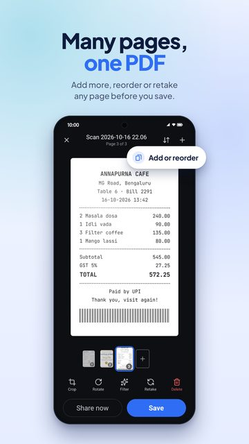

A scanner that takes the photo for you
How AONE Scanner turns paper into clean PDFs
Most phone scans go wrong in the same ways: a tilted page, a blurry shot, the table showing round the edges. AONE Scanner handles the careful part. Hold your phone over a page and it finds the edges, waits until the picture is sharp and steady, takes it, and straightens the page so it looks like it came out of a real scanner.



It finds the page
A page-detection model trained for documents runs on your phone and outlines the page live, in blue, even on a busy desk or a patterned surface. When several documents are in view, tap the one you mean.
It takes the photo when it's sharp
In Auto, AONE waits for a steady, sharp view, shows "Hold steady…", and takes the picture by itself. Prefer to decide yourself? Switch to Manual and tap the shutter. The flash and torch are there for dim rooms, and you can lock the page to portrait or landscape.
Several papers, one shot
- Papers side by side (receipts, ID cards, two forms) become separate pages, numbered in order. If you'd rather keep them as one page, tap Keep as one.
- An open book or passport becomes one page per side. Prefer the whole spread? Turn off Book pages separately in Settings.
Fix anything before you save
- Crop with pinch zoom, double-tap zoom and a magnifier that shows exactly where a corner lands, or use the full photo.
- Filters: Auto (clean white paper, crisp text), Original colour, Grayscale or Black and white, for one page or all of them.
- Pages: rotate, reorder, retake or delete, and add more at any time.
Small files that send fast
Save the scan to your library, or share it as a PDF or JPG. Choose Original, Balanced or Small and see the file size before you share, or set an exact limit such as 200 KB for a portal. Page size can be A4, Letter, or fitted to the paper.
Already have photos or PDFs?
Import photos from your gallery or PDFs from any app, including password-protected PDFs on Android 15 and later. Photos get the same edge detection and clean-up as camera scans.
Questions
Does scanning need the internet?
No. Edge detection, capture and clean-up all run on your phone.
What can I scan?
Anything flat: forms, receipts, bills, certificates, letters, notes, ID cards and book pages. For an exam or visa photo or a signature, use the camera's Photo and Signature modes (see form sizes).
Can I sign or write on a scan?
Yes. Open a page and choose Markup or Sign: how to sign a PDF.